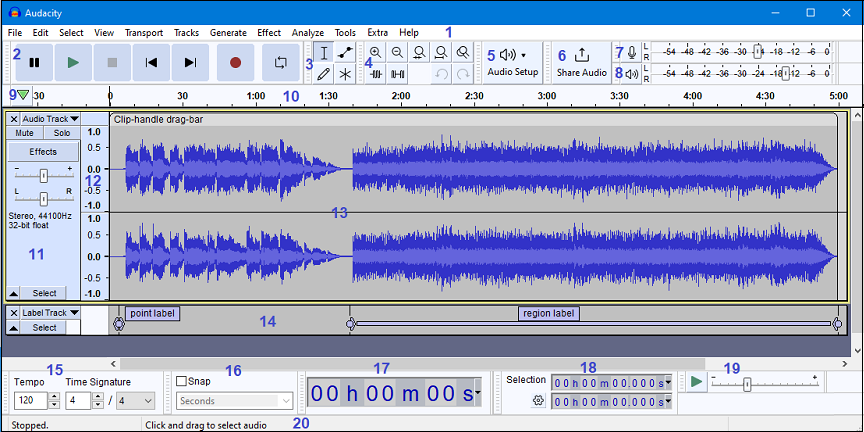

Searching the Manual
This page provides some useful workarounds.
Contents
The release version of the Audacity Manual does not have a built-in search engine. However, you can easily search the on-line version using Google.
For example, if you want to search for "crossfade tracks", use this as the search term: site:https://manual.audacityteam.org/ "crossfade tracks"
Click here to: see it in action.
| Add a bookmark / favorite to your web browser to: site:https://manual.audacityteam.org/
Then you can use that shortcut and only need to type the search term (such as "crossfade tracks"). |
Searching on the Manual's front page
In most cases it is possible to find the relevant section by searching the Front (Home) Page of the manual with your web browser's word search, usually Ctrl + F (or ⌘ + F on Mac).
The Amazing Imagemap
The big picture of the Audacity interface on that page is a clickable imagemap which has "tooltips" when you hover the mouse over it.
Clicking on that part of the image will take you to the appropriate page of the Manual.
- Replica of the front page imagemap. Click on any part of it to learn more about that functionality.
- 
Audacity Index
The Manual has a rudimentary Index which can be searched.
The Index can always be accessed from the Reference section of the left-hand navigation bars.

This search page
This page can readily be accessed from the Reference section of the left-hand navigation bars.